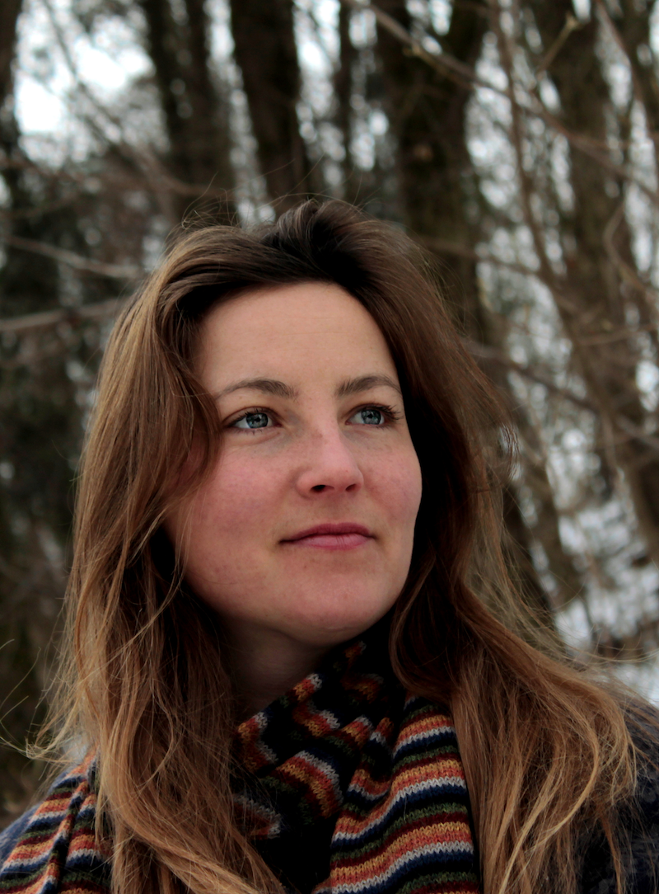

About
 In case you were looking for a pronunciation guide to my (admittedly peculiar) name, you are in luck. It is generally pronounced in the German way : TA - less GOOT - keh
I'm a computational astrophysicist specializing in developing simulations of galaxies formation. See my CV and my papers on ADS for more on that. My research interests include (but are not limited to) the interstellar medium and resolving supernova feedback, but also the circumgalactic medium and the nature of dark matter. I'm a postdoctoral fellow at the Max Planck Institute for Astrophysics. Prior to working in Munich, I received my PhD from the Max Planck Institute for Astronomy in Heidelberg. I received my M.S. and B.S. in Physics from the University of Heidelberg.
I grew up in Berlin, Germany and attended the bi-lingual, bi-cultural, international John F. Kennedy School. It was founded by the US military during the occupation of Berlin after WWII. To this day, it promotes the cultural exchange of Germans and Americans. However, I was born and spent much of my childhood in Gümüşlük, a town on the south-western coast of Turkey. In ancient times, this used to be part of Caria and is close to Greek ruins of the port town of Miletus, the home of the philosopher Thales. I'm named after him, if you hadn't got that.
In my free time, I enjoy many outdoor activities. This mostly includes swimming, running, biking, hiking and rock climbing, though I am always open to trying out a new sport. I also find my time well spent while gardening or designing and building carpentry projects. I have been painting for some years now and have started taking commissions for (often abstract) artwork. A dedicated art website is in the works and will be linked here.